Overview
For summer 2026, Tiffany placed its interns in cross-functional groups and asked each group to identify a critical touchpoint in the retail experience, propose a solution that could redefine client engagement, and tie that solution back to their own functions. My group of seven came from Sales Merchandising, Merchandising, Product Marketing, Digital, Product Development, and UX. Each of us also completed in-store retail immersion at an assigned store, which is where most of the raw material for this project came from. We focused on what happens after a client leaves a boutique and proposed a private, opt-in digital recap of the visit.
My Role
I was a UX Design intern, one of seven on a cross-functional team. I proposed the original concept and owned the experience design that followed from it.
The team was Geraldine (Sales Merchandising), Nina (Digital, North America), Kat (Merchandising, H&A), Alex (Product Development, H&A), Lola (Product Marketing), and Enzo (UX Research), with a Tiffany advisor guiding the group. We worked from June to July 2026 in the Product, Merchandising & Digital Experience function group of Tiffany’s Summer Internship Program, and presented to an evaluation panel on July 29, 2026.
The Problem
Early on, Enzo shared an observation from his retail immersion that clients who contact a store before visiting convert at a noticeably higher rate than walk-ins. Walk-ins often leave with nothing but memory, without a record of what they tried, a way back to the advisor they spoke with, or anything to carry their interest forward.
The group had weighed several other directions before settling on this one, including an omnichannel bridge between online browsing and in-store visits, short storytelling content about craftsmanship and provenance, service and repair visits redesigned as brand moments, a live personalization preview for engraving, and a general follow-up system for people who left without buying. We chose to focus on the moment right after a client leaves the store.
The Concept
After Enzo shared his observation, I wrote the first full version of what became the group’s idea. Every advisor-assisted visit, whether by appointment or walk-in, generates a private, personalized web page sent to the client afterward by SMS, email, or their existing Tiffany account. The page recaps the pieces they tried, tells the story behind each one, and keeps their advisor’s contact close at hand. The client opens it through a private link with their name on it, without needing an app, a login, or a download.
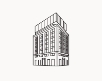
Client visits the boutique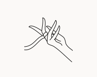
Explores pieces with an advisor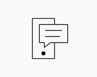
Opts in to receive a recap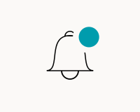
Receives it by email or SMS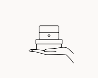
Opens the recap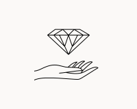
Revisits products and stories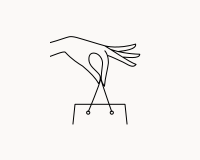
Reconnects with the advisor or purchases
My pitch also set three conditions that held through to the final presentation. The recap had to turn a walk-in who would otherwise leave anonymous into a client the advisor could reach again, each recap had to be approved by the advisor before it was sent, and the system had to run on platforms Tiffany already had so stores would not need new software to adopt it.
Refining the concept
Our Tiffany advisor’s first read was that the pitch was too broad and too retail-generic, and that it needed to tie more directly to each of our functions as something our own teams could realistically improve. One teammate combined our functional angles with that feedback into a reframed version that positioned the recap as a client retention tool and divided ownership by function. Merchandising took recommendation logic, Digital took delivery and channel strategy, Product Development took product storytelling, and UX Research took concept validation.
The result was Boutique Visit Recaps. A broader Digital Concierge idea covering milestone-based outreach and predictive gifting went on a longer-term roadmap, since it reached well past the length of the internship.
Experience Design
Within that split, I owned the experience design, which meant deciding what the recap contained, how it was organized, and how it needed to feel. The recap includes the advisor’s note, the pieces tried on with images and specifications, the story and craftsmanship behind each collection, recommended pairings, and a direct way to book another appointment or contact the advisor.
I also set five principles for the concept. The recap is personal because it is built around a real advisor and a specific boutique visit, and premium because it reads as a luxury service instead of a marketing message. It is intentional in that it goes out only when relevant and never as a mass follow-up, and connected in that it carries the in-store consultation into the client’s digital journey. It is also low-friction, keeping the experience simple for both advisor and client without forcing anyone to create an account.
Deciding who should receive a recap took the most groundwork. A recap only works when an advisor has a client’s details and permission to contact them, so the baseline requirement was an assigned advisor and contact permission on file. Setting that requirement meant understanding how client information enters Tiffany’s systems, which was one of my main goals during retail immersion. Client advisors, the store manager, and the store director walked me through the clienteling platform advisors use, showing me what client profiles look like, how details are entered, and how follow-up moves through the funnel. Nina’s work on the digital side covered what I could not see from the store, and the team set the boundaries together from there.
Enzo’s observation also shaped the scope. Clients who engage before a visit are already likely to buy, but they are only part of who comes into a store. Advisors try to speak with everyone who walks in, apart from moments when the store is very busy or a visitor is clearly not shopping, which is common at a flagship like The Landmark. Any time an advisor talks with someone and records their details, that record can power a recap, so the recap reaches every client an advisor has engaged and recorded instead of everyone who walks through the door.
Key Decisions
Client advisors as users
Although the recap is a page for the client, it depends on client advisors, who capture the details, write the note, and approve each send. The concept would fail if advisors did not want to use it, so they were the users the design had to win over first.
Shadowing advisors during retail immersion showed me how follow-up works today. Advisors are expected to follow up with clients, and in my store they worked toward targets for outreach and weekly sales. One advisor built follow-ups from a Canva template, while another kept a set of iMessage templates drafted in ChatGPT, choosing one to fit the situation and adjusting it before sending. The advisors varied widely in age and background, and each had built a separate workaround. The recap gives all of them one consistent way to reach clients they have met while leaving room to personalize, so no message reads as generic. The advisor stays visible throughout the interface, and we pitched the concept in terms that showed advisors what it would do for them.
Commission and omnichannel
Client advisors earn commission on the clients they bring in, but an online purchase does not credit them, even when the advisor helped that client in the store. The recap had to connect store and digital channels without pulling sales away from the advisor who earned them.
Before the final presentation, I arranged for our group to present to my manager and director, and my manager raised the concern that a digital recap could make it easier for a client to buy without going back to their advisor. The design already leaned toward the advisor, and the final version made that a rule. The advisor’s note opens the page with their name and photo, and both closing actions, Message John and Book an Appointment, route back to that advisor. Earlier versions ended with a link to Tiffany.com, which I removed in the final version so the page never ends on a path that skips the advisor.
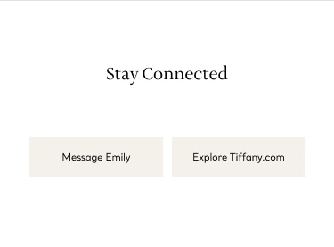
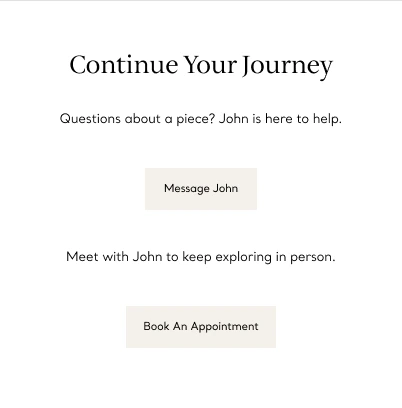
Advisor note
Because Tiffany’s business runs on relationships, the note comes first and draws on what the advisor learned in conversation, so a client who mentioned an upcoming birthday or a new job starting next week would see that carried forward. The rest of the page would be assembled with AI, pulling client data and email content from the systems Tiffany already uses, such as Salesforce and Adobe. The recap draws on that information but presents it as an experience to explore, with none of the look or tone of a marketing email.
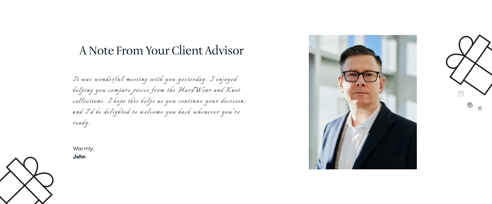
Recommendations
In the boutique, advisors do not stop at the piece a client asks for. They bring out alternatives using Tiffany’s Same, Similar, Dream approach, and Selected For You follows that pattern with three picks. Continue Exploring builds on what the client loved, Complete the Look adds a complementary piece, and Elevate Your Collection introduces something more aspirational.
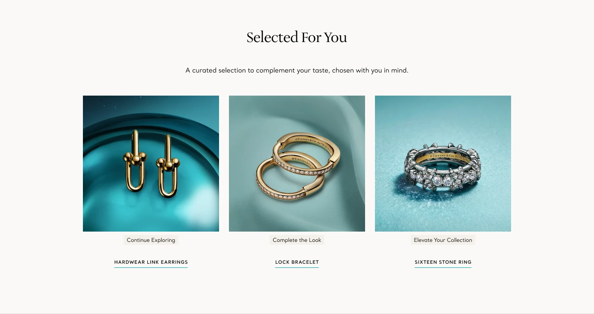
Collection stories
The pieces a client explored appear as pages in a book they can turn, a nod to the Tiffany Blue Book. Each spread pairs a piece with the story behind its collection, such as HardWear’s roots in New York or the archival 1889 motif behind Knot. The recap deliberately looks different from Tiffany.com, but every element still ties back to the brand.
The Prototype
I built the Figma prototype the team presented, in mobile and desktop versions, over three rounds. The wireframe set the order of sections, the first styled version introduced the advisor note and the HardWear story, and the final version added the book interaction, a Style Profile reflecting themes in what the client explored, the three recommendations, and the closing actions that route to the advisor. The prototype was a proof of concept showing the core flow for one client, Jane, and covered only part of what a full recap system would include, which is how we presented it to the panel.
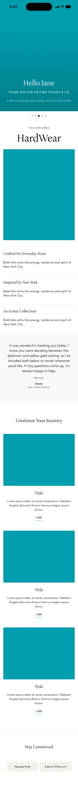
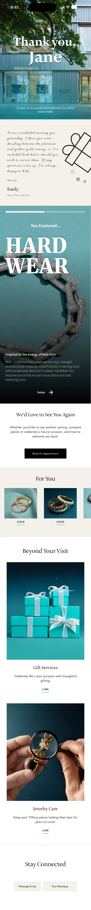
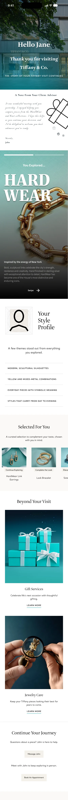
Outcome
We presented on July 29, 2026, to an evaluation panel that included a VP from Merchandising, a client advisor, a recruiter, and a member of the internship program’s leadership. One panelist felt we had not fully addressed the difference between a walk-in and an existing client, and pointed out that we had observed inconsistency in how advisors use their clienteling platform without proposing a fix. Another noted that our answers on how the functions fit together could have been more concise. Overall, panelists called the client-impact reasoning well thought through, praised how clearly the presentation tied back to each person’s function, and said the mockup and overall polish were strong.
Reflection
Unlike my individual work at Tiffany, this project tested whether an idea could hold up against six other functions, an advisor’s pushback, and a live evaluation panel. The framing, ownership split, and retention language that changed along the way made it a stronger pitch than the one I started with.
It also taught me how group work runs in a corporate setting. On a school project, you can sometimes switch groups or work around people, but at work the team is set and the work still has to move. I learned when to drive and when to listen, how to make sure everyone is heard without spending whole meetings on discussion, and how to raise blockers early so tasks keep moving, both with teammates whose working styles differed from mine and with those who worked exactly the way I do.
The recap was also the most creative freedom I had at Tiffany. It did not need to follow the website’s design system, and to give it personality, it was not supposed to. That let me bring my own voice into the work in a way my other projects there had not, and showed me how I could innovate inside a company with established standards.